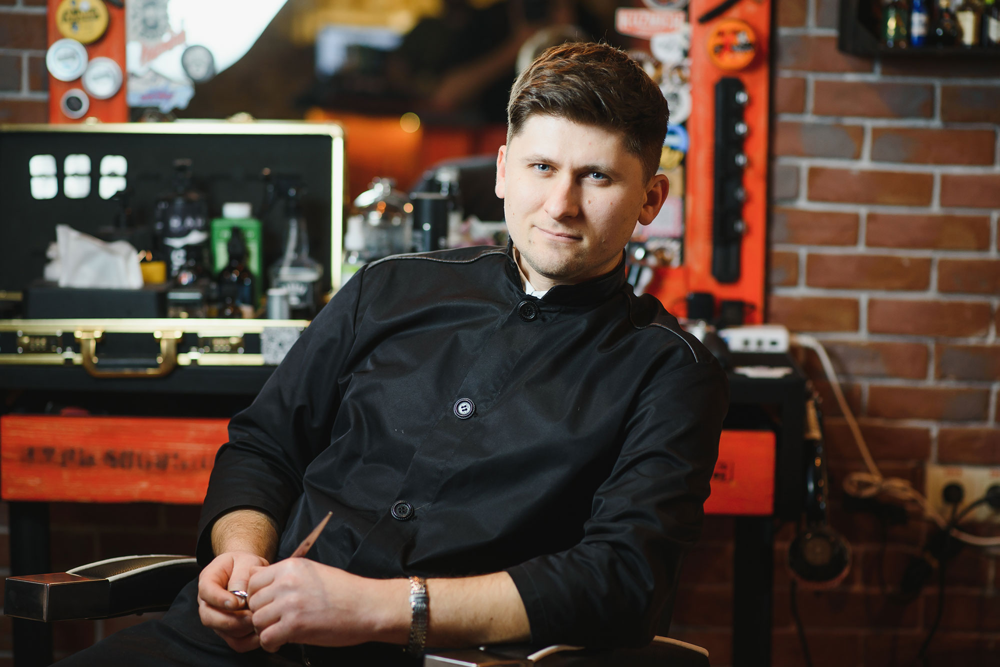

Conoce CORTE SUPREMO: Visión, Misión y Compromiso con tu Estilo
Visión de CORTE SUPREMO: Transformando tu estilo y confianza.
CitasNuestra Visión En CORTE SUPREMO, aspiramos a ser mucho más que una simple barbería; queremos convertirnos en el destino preferido de quienes buscan un estilo impecable, un servicio excepcional y una experiencia inigualable. Nos esforzamos por elevar el estándar del cuidado masculino, combinando la tradición de la barbería clásica con las últimas tendencias en cortes de cabello, afeitados y tratamientos para el cuidado de la barba. Nuestro objetivo es que cada cliente que cruce nuestras puertas se sienta valorado, cómodo y salga con una imagen renovada que potencie su confianza y estilo personal. Nos visualizamos como un referente en la industria de la barbería, expandiendo nuestra comunidad y ofreciendo experiencias únicas que van más allá de un simple corte de cabello.
 Citas
Citas
Nuestra Misión: Cortes y servicios de barbería excepcionales en HOUSTON
Nuestra Misión
En CORTE SUPREMO, nos dedicamos a brindar un servicio de barbería de alta calidad, donde la
precisión, el detalle y la satisfacción del cliente son nuestra máxima prioridad. Contamos con un equipo de
barberos altamente capacitados y apasionados, comprometidos en proporcionar cortes modernos y tradicionales,
afeitados profesionales y asesoramiento personalizado para cada tipo de rostro y estilo.
Nos aseguramos de utilizar productos de primera calidad que cuidan y protegen el cabello y la piel,
garantizando resultados excepcionales. Creemos que la barbería no es solo un lugar para arreglarse, sino un
espacio de desconexión, conversación y bienestar.
Además, estamos comprometidos con la innovación y la formación continua para mantenernos a la vanguardia de
las últimas técnicas y tendencias en el mundo de la barbería. Buscamos que cada visita a nuestra barbería
sea una experiencia relajante y revitalizante, en un ambiente acogedor, moderno y diseñado para que cada
cliente se sienta como en casa.
En CORTE SUPREMO, tu estilo es nuestra pasión.

Citas